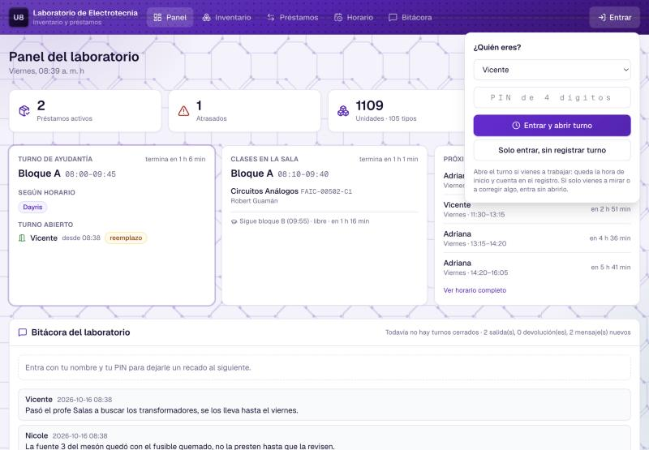
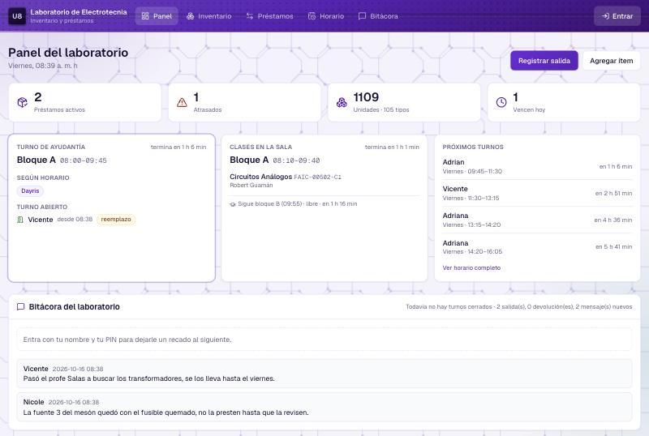
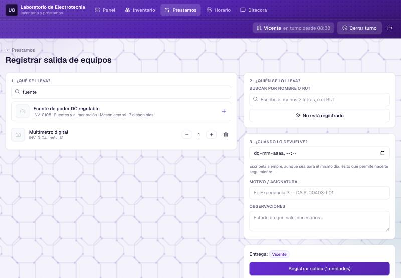
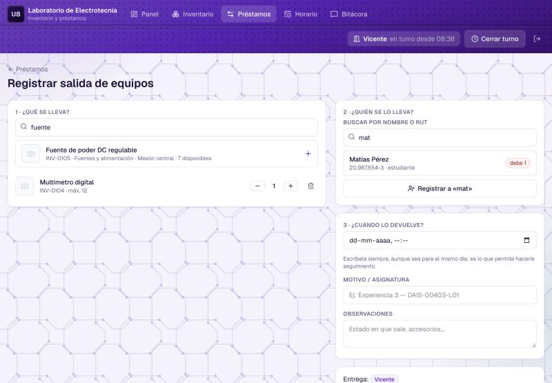
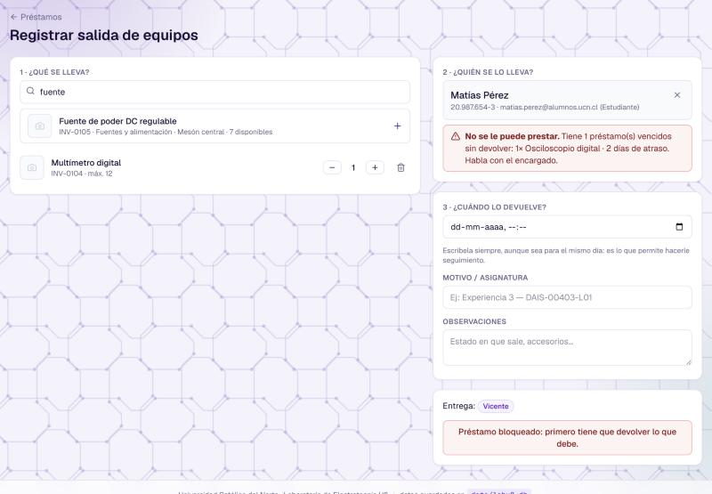
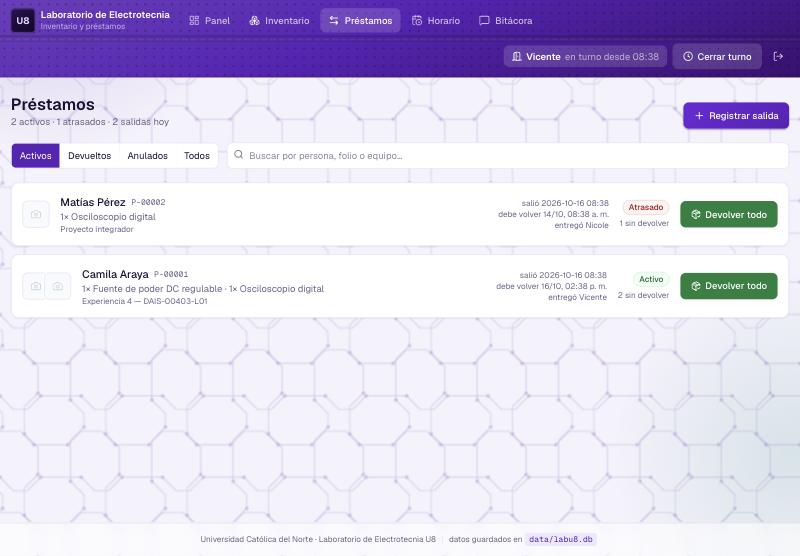
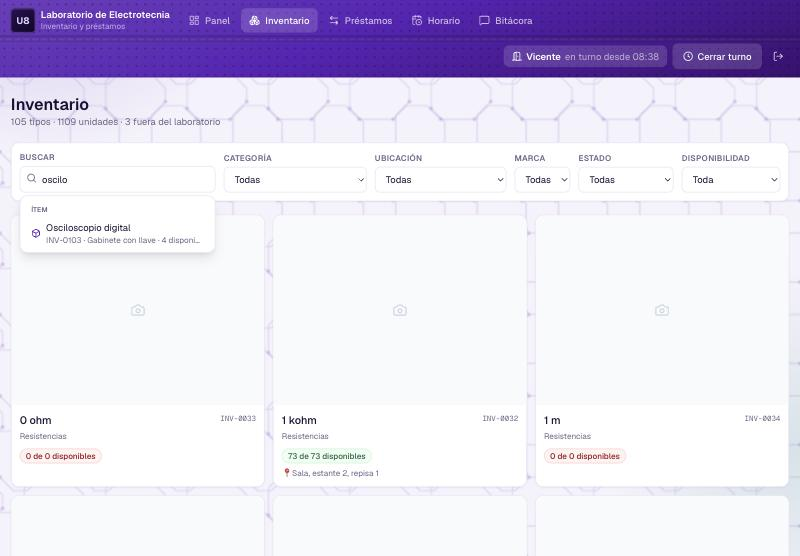
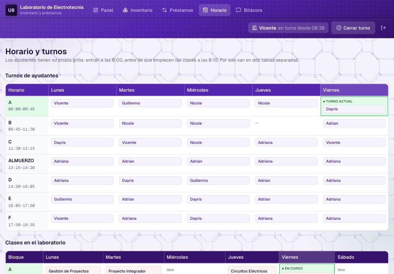

Todo lo que necesitas saber para usar el sistema durante tu turno. Lo más importante son dos cosas: abrir turno al llegar y registrar todo lo que sale y vuelve. El resto se explica solo.
1 · La rutina de un turno
Esto es todo el ciclo, de principio a fin:
1. Abre tu turno apenas llegues. Es lo que deja registradas tus horas y lo que permite ver quién hizo reemplazo si tuviste que cubrir a otro.
2. Registra todo lo que sale y todo lo que vuelve, aunque sea un cable por diez minutos. Si no queda registrado, para el sistema ese equipo sigue en el laboratorio, y el que paga el pato es el turno siguiente.
2 · Entrar y abrir turno
El botón Entrar está arriba a la derecha, en la barra morada. Al apretarlo se abre esta ventanita:

1 2 3 4 5- Aprieta Entrar.
- Elige tu nombre en la lista.
- Escribe tu PIN de 4 dígitos.
- Entrar y abrir turno — esto es lo que usas tú al llegar a trabajar. Queda registrada la hora y cuenta en tus horas del mes.
- Solo entrar, sin registrar turno — para mirar algo o corregir un dato sin que cuente como turno trabajado. Normalmente no lo vas a usar.
No pasa nada: arriba a la derecha te va a aparecer «sin turno abierto» y un botón Abrir turno. Apriétalo y queda igual.
3 · El panel: qué mirar al llegar
Es la primera pantalla. Está pensada para que en diez segundos sepas con qué te estás encontrando.

1 2 3 4 5- Los números de arriba. Cuántos préstamos hay afuera, cuántos están atrasados, cuántas unidades tiene el laboratorio y cuántos vencen hoy. Si «Atrasados» no está en cero, hay equipos que debían haber vuelto.
- Turno de ayudantía. Qué bloque corre ahora, a quién le toca según el horario y quién abrió el turno de verdad. Si dice reemplazo es porque quien abrió no es el del horario.
- Clases en la sala. Qué ramo está ocupando el laboratorio en este momento y cuál viene después.
- Próximos turnos. Quién viene después de ti.
- Bitácora. Los recados que dejaron los turnos anteriores. Léelos antes de empezar.
Si algún bloque de hoy pasó sin que nadie lo abriera, aparece un recuadro amarillo diciendo cuál fue y a quién le tocaba. No es para acusar a nadie: es para que sepas que el laboratorio estuvo sin ayudante.
4 · Prestar un equipo
Desde Préstamos → Registrar salida, o con el botón del panel. La pantalla está numerada: solo sigue el 1, 2, 3.

1 2 3 4- ¿Qué se lleva? Escribe el nombre del equipo y aprieta el +. Puedes agregar varios. Con los botones − y + ajustas cuántas unidades lleva.
- ¿Quién se lo lleva? Escribe el nombre o el RUT. Si no aparece, el botón te ofrece registrarlo en el momento.
- ¿Cuándo lo devuelve? Siempre hay que ponerla, aunque sea para la misma tarde. Sin fecha no se puede hacer seguimiento.
- Aprieta Registrar salida. Listo.
Si la persona no está registrada
Escribe su nombre en el buscador y aprieta el botón que aparece debajo («Registrar a …»). Te va a pedir nombre, RUT y correo, y los tres son obligatorios.
No es burocracia: si el equipo no vuelve, eso es lo único que tienes para ubicar a la persona.

1 2 3- Escribe dos letras del nombre, o el RUT.
- Si la persona debe equipos, sale marcado en rojo altiro.
- Si no está en la lista, este botón la registra.
5 · Cuando alguien debe equipos
Si la persona tiene préstamos vencidos sin devolver, el sistema no te deja registrarle una salida nueva:

El botón de registrar desaparece y en su lugar queda el aviso. No es un error tuyo ni hay forma de saltárselo desde la aplicación.
Que primero devuelva lo que tiene pendiente y después puede llevarse lo que necesite. Si el caso es urgente —un certamen, una entrega— que hable con el encargado: solo él puede desbloquear la situación, anulando o cerrando el préstamo viejo.
Tú no tienes que negociar nada ni sentirte mal. El sistema decidió, no tú.
6 · Recibir una devolución
Lo normal —vuelve todo y en buen estado— es un solo clic desde la lista de préstamos. No necesitas entrar a ninguna parte.

1 2 3- Devolver todo — el botón verde. Marca el préstamo completo como devuelto, con tu nombre y la hora.
- La etiqueta te dice si está al día o atrasado.
- Aprieta sobre el nombre si necesitas ver el detalle: qué se llevó exactamente, cuándo, y quién se lo entregó.
Si vuelve solo una parte
Entra al préstamo apretando el nombre. Abajo hay una lista con cada equipo y una casilla de cuántas unidades vuelven. Pon las que efectivamente te entregaron y confirma: el préstamo queda abierto con el resto pendiente.
7 · Si algo vuelve roto o no vuelve
En la pantalla de devolución, al lado de cada equipo hay un menú de Condición con tres opciones:
| Opción | Cuándo usarla | Qué hace el sistema |
|---|---|---|
| Buen estado | Lo normal. | El equipo vuelve al stock, disponible para el siguiente. |
| Dañado | Volvió pero no está para prestarlo: una punta quebrada, no enciende, le falta una pieza. | Lo deja en mantenimiento, nadie puede prestarlo hasta que lo revisen, y le avisa al encargado. |
| Perdido / no vuelve | La persona dice que lo perdió, o directamente no lo trajo. | Lo descuenta del inventario y le avisa al encargado. |
Abajo hay un campo de nota. Pon ahí lo que te dijeron: «se le cayó al suelo», «dice que lo devolvió el martes». Esa frase es lo que va a leer el encargado cuando revise, y evita discusiones después.
8 · Buscar en el inventario
El buscador entiende más que el nombre: puedes escribir la categoría («resistencias»), la ubicación («sala», «estante 2») o el estado («mantenimiento»).

1 2 3- Escribe lo que buscas, aunque sean dos letras.
- Aparece una lista mientras escribes. Si eliges una categoría o una ubicación, filtra todo el inventario por eso.
- Los filtros de arriba se aplican solos al elegirlos, no hay que apretar ningún botón.
No hace falta poner tildes: multi encuentra «Multímetro».
Apretando cualquier equipo ves su ficha: dónde está guardado, cuántos quedan
y quién lo tiene en este momento.
Tú puedes mirar todo y prestar, pero agregar equipos, editar fichas, subir fotos o cambiar cantidades es del encargado. Si falta algo o un dato está mal, avísale.
9 · Dejar un recado al turno siguiente
La Bitácora es el cuaderno del laboratorio. Está en el panel y también en su propia pestaña. Escribe ahí cualquier cosa que el que viene después necesite saber:
- «La fuente 3 quedó con el fusible quemado, no la presten.»
- «Pasó el profe Salas a buscar los transformadores, los trae el viernes.»
- «Quedó un multímetro sobre el mesón, no sé de quién es.»
Los mensajes no se borran al cerrar el turno: quedan guardados y los ve cualquiera que entre. Una línea separa lo nuevo de lo viejo.
Ahí mismo aparecen solos los avisos del sistema cuando algo vuelve dañado o se pierde, marcados como incidencia.
10 · El horario
Son dos tablas, porque los ayudantes entran a las 8:00 y las clases empiezan a las 8:10. Los bloques se llaman igual (A, B, C…) pero tienen horarios distintos; al lado de cada letra está la hora, que es lo que los distingue.

1 2- Turnos de ayudantes: A, B, C, ALMUERZO, D, E, F. El recuadro verde es el bloque que corre ahora.
- Clases en el laboratorio: bloques A a G, con el ramo y el profesor. También marca en verde el que está en curso.
11 · Cerrar turno y salir
Antes de irte, dos cosas:
- Revisa que todo lo que salió durante tu turno esté registrado, y que lo que volvió esté marcado como devuelto.
- Si pasó algo que el siguiente deba saber, déjalo en la bitácora.
- Aprieta Cerrar turno arriba a la derecha. Queda guardada la hora de término.
- Si además te vas del computador, aprieta el botón de salir (el icono de la flecha) para que nadie use tu cuenta.
Tus horas de ese día cuentan solo hasta el final del bloque en que lo abriste, y queda marcado como «sin cerrar». El encargado puede corregir la hora después, pero es más fácil acordarse.
12 · Si algo sale mal
| Qué te pasa | Qué hacer |
|---|---|
| Me equivoqué al registrar un préstamo | Avísale al encargado: solo él puede anularlo. Mientras tanto no lo registres de nuevo, quedarían dos. |
| Dice «PIN incorrecto» y estoy seguro de que es el mío | Revisa que arriba esté tu nombre y no el de otro. Después de 5 intentos la cuenta se bloquea 5 minutos. |
| Dice «Demasiados intentos fallidos» | Espera los minutos que indica, o pídele al encargado que te ponga un PIN nuevo: eso levanta el bloqueo de inmediato. |
| No encuentro un equipo en el buscador | Prueba con menos letras, o con la categoría. Si de verdad no está en el inventario, avísale al encargado para que lo agregue. |
| El equipo está en el laboratorio pero el sistema dice que está prestado | Alguien no registró la devolución. Búscalo en Préstamos y devuélvelo tú, y déjalo anotado en la bitácora. |
| La página no carga | Avísale al encargado. Mientras tanto anota en un papel lo que salga y lo que vuelva, y regístralo apenas se arregle. |